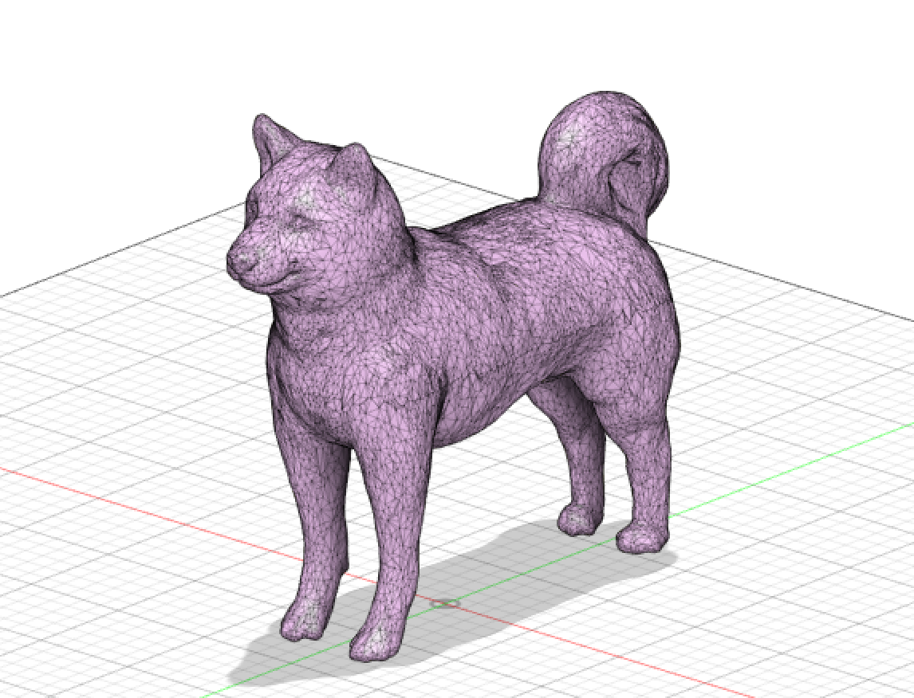
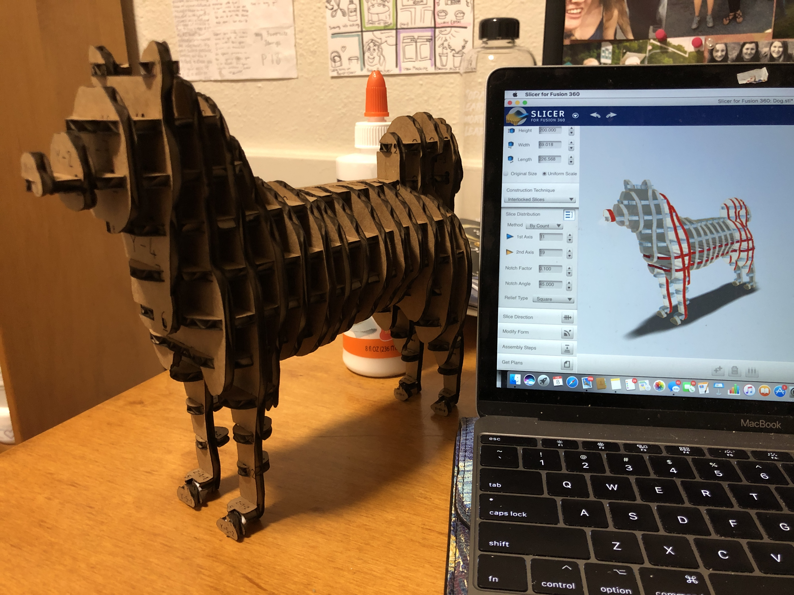

This week's task was to design and laser cut a press-fit construction kit from cardboard. After snooping around the internet (namely Pinterest) for a bit, I decided I wanted to make a press-fit animal made of interlocked slats to create a convincing 3D model upon assembly. As per usual, I derived my inspiration from internent memery, and set out on my noble quest: the construct doge out of cardboard.
I set out to the mercantile center of all things 3D (TinkerCAD) and found a gloriously uncopyrighted 3D model of doge (with all the trappings of the infamous meme) that I could import into Fusion 360. Strictly speaking, this is a model of a Shiba Inu dog, but I like to think this was doge in his finest form. Pictured at the left in polygon mesh.
After doing some research on how to bring doge to life, I happened upon a Fusion 360 add-in called "Slicer," which can identify the contours of a 3D model and help create an array ready for the laser cutter. This proved fully magical, and, with the insertion of material parameters and the desired number of faces on the Y and Z planes, I had an array of 52 pieces ready to cut.
After extracting all 52 pieces (big and small alike), I set to work assembling doge, using the handy-dandy coding system visible on each piece, which corresponds to the orientation and dimensionality of the piece (along the arbitrarily-decided Y or Z axis). This is just to say: Slicer is an amazing piece of software. Despite its precision, good old-fashioned tacky glue was required at some points to anchor in the smallest parts (being the nose and the paws). At the left is the final product beside the original contoured 3D model in Slicer!
howdy